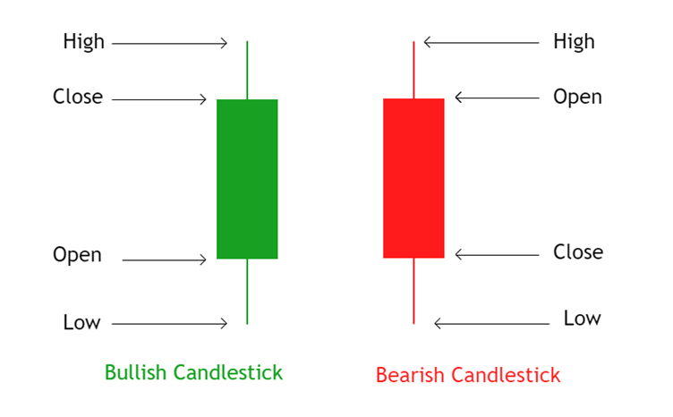
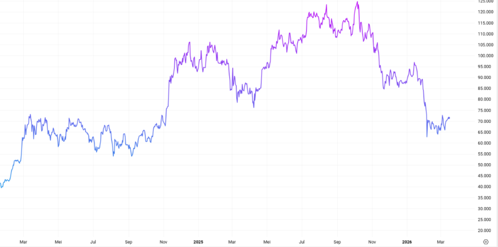
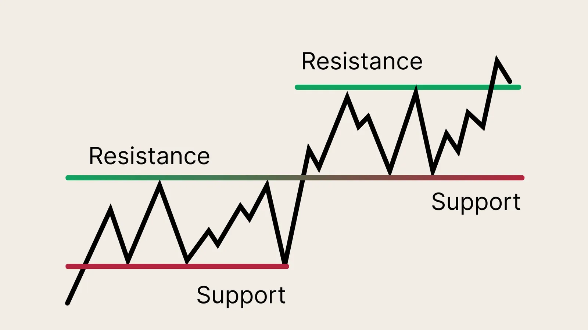
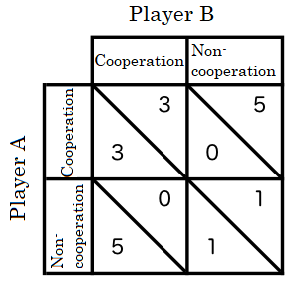
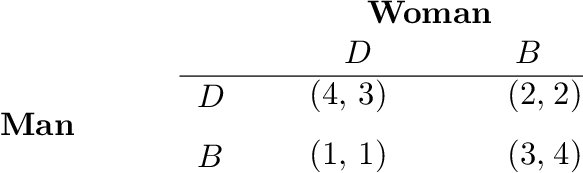

%%{init: {"themeVariables": {"pieSectionTextSize": "36px", "pieLegendTextSize": "20px"}}}%%
pie
"Cash" : 40
"BBCA" : 30
"ADRO" : 30
OPTIMASI PORTOFOLIO BERBASIS MODEL MARKOWITZ MENGGUNAKAN METODE VARIATIONAL QUANTUM EIGENSOLVER
Tugas Akhir SF234801
Analisis Fundamental dan Teknikal
Analisis Fundamental

Struktur laporan arus kas fundamental.
- Ekonometrik Perusahaan
- Kesehatan Fiskal
- Sentimen Pasar
Analisis Teknikal

Candlestick

Price Chart

Support & Resistance
- Representasi Psikologi Kolektif dari Agen Pasar
Analisis Kuantitatif
- Simple Return (\(R\)): \[ R_t = \frac{P_t - P_{t-1}}{P_{t-1}} \]
- Expected Return (\(\bar{R}\)): \[ \bar{R} = \frac{1}{n} \sum_{t=1}^n R_t \]
- Variance (\(\sigma^2\)): \[ \sigma^2 = \frac{1}{n-1} \sum_{t=1}^n (R_t - \bar{R})^2 \]
- Covariance (\(\sigma_{ij}\)): \[ \sigma_{ij} = \frac{1}{n-1} \sum_{t=1}^n (R_{i,t} - \bar{R}_i)(R_{j,t} - \bar{R}_j) \]
- Log Return (\(r\)): \[ r_t = \ln\left(\frac{P_t}{P_{t-1}}\right) \]
- Expected Return (\(\bar{r}\)): \[ \bar{r} = \frac{1}{n} \sum_{t=1}^n r_t \]
- Variance (\(\sigma^2\)): \[ \sigma^2 = \frac{1}{n-1} \sum_{t=1}^n (r_t - \bar{r})^2 \]
- Covariance (\(\sigma_{ij}\)): \[ \sigma_{ij} = \frac{1}{n-1} \sum_{t=1}^n (r_{i,t} - \bar{r}_i)(r_{j,t} - \bar{r}_j) \]

Transformasi pergerakan harga saham.
- \(P_t\): Harga pada waktu \(t\)
Jenis-Jenis Permainan (Game Types)

Stag Hunt

Prisoner’s Dilemma

Battle of the Sexes
Desain Sirkuit Kuantum

Arsitektur Hardware-Efficient Ansatz dengan depth \(D=1\)
Matriks Rotasi \(U_q(\theta)\) untuk 2 Qubit
Berdasarkan definisi gerbang rotasi \(R_y(\theta)\) dan \(R_z(\theta)\): \[ \begin{align} U_{1q}(\theta) &= R_z(\theta_{1z}) R_y(\theta_{1y}) \\ &= \begin{pmatrix} e^{-i\theta_{1z}/2} & 0 \\ 0 & e^{i\theta_{1z}/2} \end{pmatrix} \begin{pmatrix} \cos(\theta_{1y}/2) & -\sin(\theta_{1y}/2) \\ \sin(\theta_{1y}/2) & \cos(\theta_{1y}/2) \end{pmatrix} \\ &= \begin{pmatrix} e^{-i\theta_{1z}/2} \cos(\theta_{1y}/2) & -e^{-i\theta_{1z}/2} \sin(\theta_{1y}/2) \\ e^{i\theta_{1z}/2} \sin(\theta_{1y}/2) & e^{i\theta_{1z}/2} \cos(\theta_{1y}/2) \end{pmatrix} \end{align} \]
Maka untuk sistem 2 qubit: \[
\begin{align}
U_{q}(\theta) &= [R_z(\theta_{1z}) R_y(\theta_{1y})] \otimes [R_z(\theta_{2z}) R_y(\theta_{2y})]\\
&= \begin{pmatrix} e^{-i\theta_{1z}/2} \cos(\theta_{1y}/2) & -e^{-i\theta_{1z}/2} \sin(\theta_{1y}/2) \\ e^{i\theta_{1z}/2} \sin(\theta_{1y}/2) & e^{i\theta_{1z}/2} \cos(\theta_{1y}/2) \end{pmatrix} \otimes \begin{pmatrix} e^{-i\theta_{2z}/2} \cos(\theta_{2y}/2) & -e^{-i\theta_{2z}/2} \sin(\theta_{2y}/2) \\ e^{i\theta_{2z}/2} \sin(\theta_{2y}/2) & e^{i\theta_{2z}/2} \cos(\theta_{2y}/2) \end{pmatrix} \\
&= \begin{pmatrix} e^{-i(\theta_{1z}+\theta_{2z})/2} c_1c_2 & e^{-i(\theta_{1z}+\theta_{2z})/2} c_1s_2 & e^{-i(\theta_{1z}+\theta_{2z})/2} s_1c_2 & e^{-i(\theta_{1z}+\theta_{2z})/2} s_1s_2 \\ e^{-i\theta_{1z}/2}e^{i\theta_{2z}/2} c_1s_2& e^{-i\theta_{1z}/2}e^{i\theta_{2z}/2} c_1c_2& e^{-i\theta_{1z}/2}e^{i\theta_{2z}/2} s_1s_2& e^{-i\theta_{1z}/2}e^{i\theta_{2z}/2} s_1c_2 \\ e^{i\theta_{1z}/2}e^{-i\theta_{2z}/2} s_1c_2& e^{i\theta_{1z}/2}e^{-i\theta_{2z}/2} s_1s_2& e^{i\theta_{1z}/2}e^{-i\theta_{2z}/2} c_1c_2& e^{i\theta_{1z}/2}e^{-i\theta_{2z}/2} c_1s_2 \\ e^{i(\theta_{1z}+\theta_{2z})/2} s_1s_2& e^{i(\theta_{1z}+\theta_{2z})/2} s_1c_2& e^{i(\theta_{1z}+\theta_{2z})/2} c_1s_2& e^{i(\theta_{1z}+\theta_{2z})/2} c_1c_2 \end{pmatrix} \end{align}
\] dengan \[ c_i=\cos\frac{\theta_{iy}}2,\qquad s_i=\sin\frac{\theta_{iy}}2. \]
Matriks Gerbang Keterbelitan (\(U_{ent}\)) untuk 2 Qubit
Untuk lapisan keterbelitan, secara umum didefinisikan: \[ U_{ent} = CNOT_{(N-1,0)} \prod_{q=0}^{N-2} CNOT_{(q,q+1)} \]
Untuk sistem 2 qubit, hal ini mereduksi menjadi: \[ U_{ent} = CNOT_{(1,0)} \cdot CNOT_{(0,1)} \]
di mana matriks untuk masing-masing gerbang adalah: \[ CNOT_{(1,0)} = \begin{pmatrix} 1 & 0 & 0 & 0 \\ 0 & 0 & 0 & 1 \\ 0 & 0 & 1 & 0 \\ 0 & 1 & 0 & 0 \end{pmatrix} \quad CNOT_{(0,1)} = \begin{pmatrix} 1 & 0 & 0 & 0 \\ 0 & 1 & 0 & 0 \\ 0 & 0 & 0 & 1 \\ 0 & 0 & 1 & 0 \end{pmatrix} \]
Sehingga matriks total keterbelitannya adalah: \[
U_{ent} = \begin{pmatrix} 1 & 0 & 0 & 0 \\ 0 & 0 & 0 & 1 \\ 0 & 0 & 1 & 0 \\ 0 & 1 & 0 & 0 \end{pmatrix} \cdot \begin{pmatrix} 1 & 0 & 0 & 0 \\ 0 & 1 & 0 & 0 \\ 0 & 0 & 0 & 1 \\ 0 & 0 & 1 & 0 \end{pmatrix} = \begin{pmatrix} 1 & 0 & 0 & 0 \\ 0 & 0 & 1 & 0 \\ 0 & 0 & 0 & 1 \\ 0 & 1 & 0 & 0 \end{pmatrix}
\]